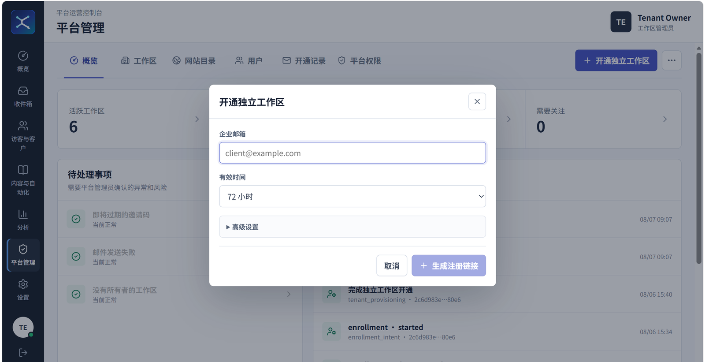

决定精确事实
商品身份、SKU、价格、库存、规格、租户权限、会话与人工工单。
Internal Business AI Agent Case Study
企业内部多站点 AI 客服与 Agent 运营平台
2026 年 7 月中旬启动的公司内部核心项目。由我独立负责需求分析、产品建模、架构设计、Agent/RAG、全栈开发、测试、部署上线与迭代维护，工程仓库经公司明确授权公开。模型负责理解和表达；身份、租户、权限、风险、事实来源、知识发布、引用和人工接管由确定性代码负责。

Role & Ownership
客服和运营人员提供业务规则、使用反馈与验收输入；我独立负责需求拆解、系统设计、 Agent/RAG 与全栈实现、测试、部署上线和持续维护。
Architecture
SupportOS 将访客渠道、Agent 运行时、精确业务事实、语义知识和人工运营拆成独立边界。图节点和 API 只能调用应用服务，不能直接访问 Repository 或供应商 SDK。
商品身份、SKU、价格、库存、规格、租户权限、会话与人工工单。
FAQ、政策、商品说明和使用指南，强制租户、站点、语言和发布状态过滤。
实时事件与需要跨请求共享的有界状态，PostgreSQL 仍是耐久业务事实来源。
Engineering Decisions
订单、退款、支付和高风险场景在任何模型或工具调用前分流，模型不能降低风险等级。
校验数字、引用、PII、跨租户信息、业务承诺与 SOP 步骤，最多修复一次，仍失败则人工接管。
新版本写入非活动集合，完成 Manifest、商品快照和向量点核对后再切换，失败保留旧版本。
接管、分配、回复、备注和解决均持久化与审计，AI 不会因为新消息自动抢回已接管会话。
Controlled Onboarding
平台管理员向指定企业邮箱签发一次性开通链接，并配置有效期与站点额度。服务端负责创建工作区和 tenant owner， 邀请支持过期、撤销、防重放和审计；工作区 Owner 再邀请客服或运营成员加入已有工作区。

Quality & Evaluation
默认环境下的单元、契约与应用层测试。
Vitest 测试和 TypeScript/Vite 构建均进入 CI。
覆盖引用、拒答、风险升级、业务承诺和跨租户安全。
阻止核心层导入 Web、ORM、向量库或供应商 SDK。
Public Release Provenance
原始开发历史包含内部配置、运营材料、早期原始评测结果和个人文件。获得公司源码公开授权后， 我没有伪造或人为拆分历史提交，而是移除敏感内容、替换合成演示数据、重新执行质量门禁，并建立独立公开仓库。
What This Project Demonstrates
这个项目展示的不是框架数量，而是如何把不确定模型放入清晰的软件边界：可信身份、最小权限、 权威数据、可恢复发布、有限状态、确定性验证、人工兜底和可复现质量门禁。
返回完整作品集